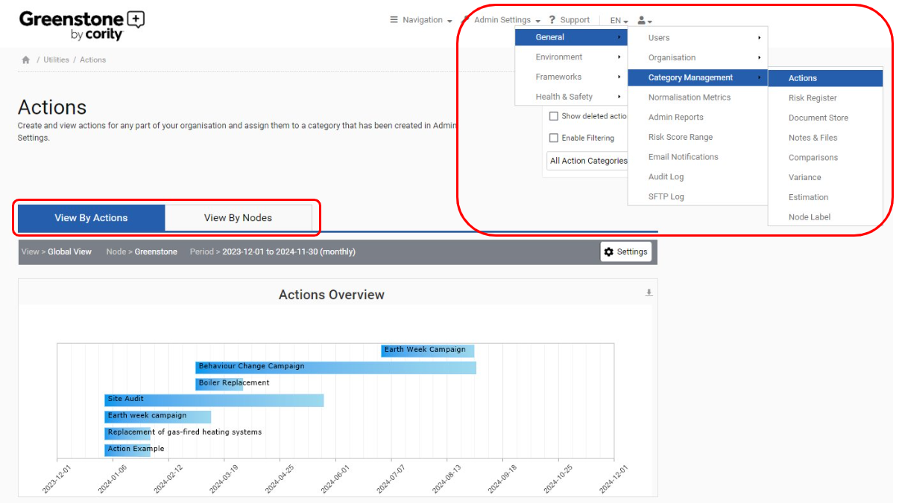
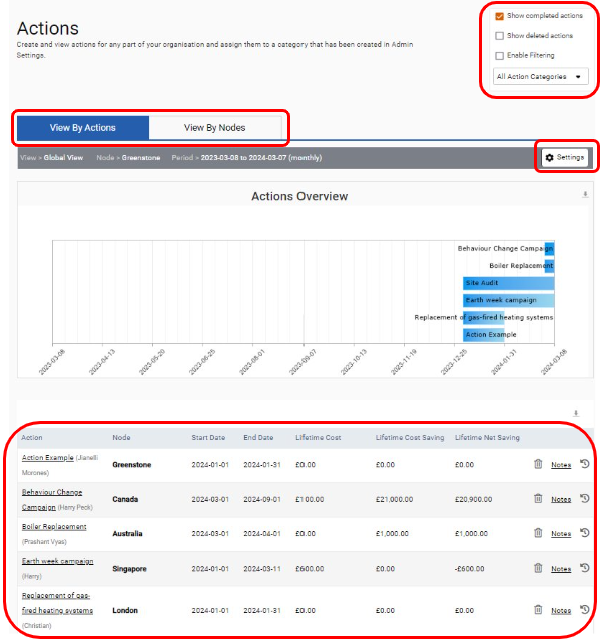
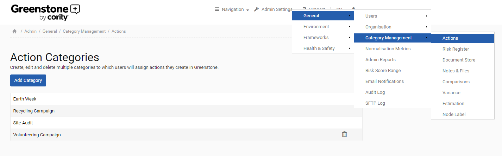
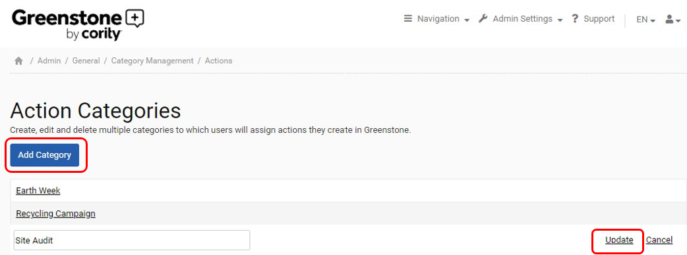
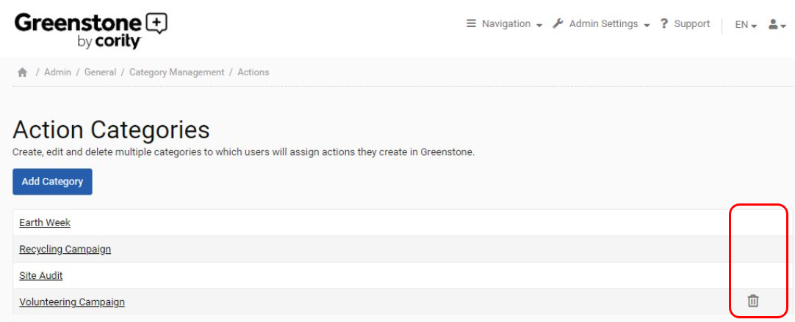
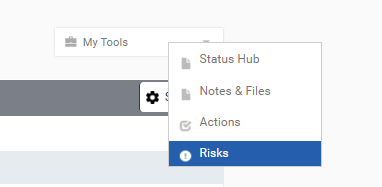
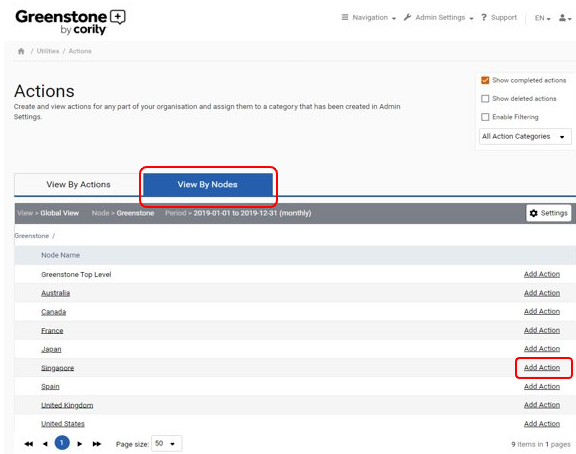
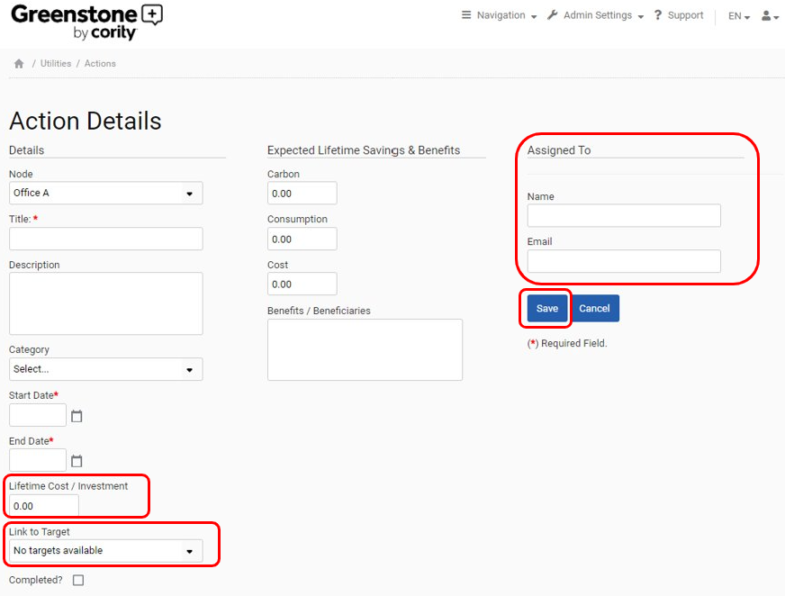

‘Actions’ can be accessed via the Actions tyle on the home page. Actions allow you to track and monitor initiatives and projects across your organization. All the projects or actions can be analyzed at any individual or aggregated organizational level with lifetime costs, savings and additional expected benefits tracked.
You can view your actions either as an overview or against a specific node within your organization, by toggling between ‘View by Actions’ and ‘View by Nodes’. You can also view specific Action Categories in ‘Admin Settings’ and actions assigned to them.

The actions displayed in the overview graph are dependent upon the selected setting, which can be adjusted using the ‘Settings’ option at the right-hand side of the screen. This allows you to change the time period, view and selected node.
The options box at the top-right of the screen also allows you to choose whether certain actions are displayed, such as completed or deleted actions. You can filter to show specific actions or groups of actions by selecting this option and then filtering within the table.

Administrator users can add action categories within the ‘Category Management’ section, located within the ‘Admin Settings’ section:

In this part of ‘Admin Settings’ you can view, update, and delete existing action categories, or add a new category.

Once an action category is in use it is no longer possible to delete it.

Actions can also be added using ‘My Tools’ in the inputs section then ‘Actions’ functionality provided on various screens in Enterprise. This will display the ‘Actions’ on the left and the details of any selected action on the right.

To add another action, simply select ‘View by Nodes’ and then ‘Add Action’ to the selected node.

Once you click ‘Add Action,’ you are able to link your ‘Action’ to any costs or investments, as well as any savings and benefits you are expecting. There is also the option to link it directly with any targets you have set and are recording in Cority. You can also assign an action to a specific person within your organization. Once you have completed all the information that is relevant for the action, click ‘Save’.
